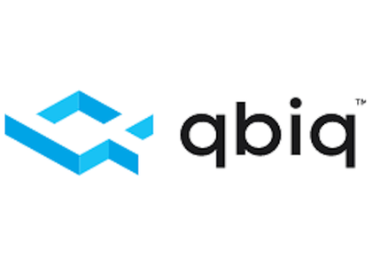

Making AI-generated office planning reviewable, editable, and ready for customers
qbiq used AI to generate office planning alternatives. My work focused on the human-in-the-loop layer: reviewing model results, comparing options, correcting outputs with architectural and regulation knowledge, and turning selected plans into customer-facing reports.
UX designer for plan editor, results-review, comparative-analysis, and reporting flows — with additional contribution as a trained architect/domain expert.
AI could generate many spatial options, but expert users still needed to judge quality, fix gaps, respect regulations, and satisfy customer-specific requests.
The experience connected automated generation with expert review, product correction, model improvement, and customer-ready decision support.
From generated options to customer-ready reports.
The section follows the real product workflow: internal experts review and compare AI-generated alternatives, correct them through an editor when needed, and package selected variations into customer-facing reports.
Impact & product decision
The work helped translate AI-generated office planning into an expert-controlled product experience. Instead of treating model output as a static result, the workflow made alternatives reviewable, comparable, correctable, and understandable for both internal experts and customers.